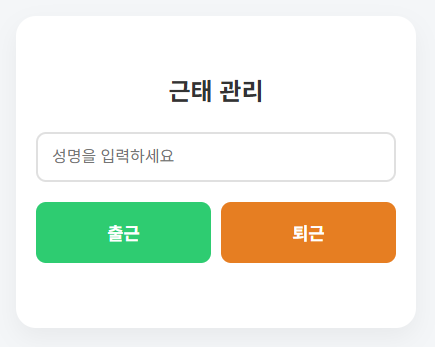
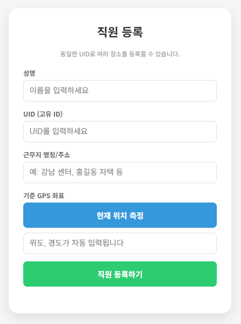

구글 스프레드시트와 Apps Script를 활용한 스마트 근태 관리 시스템입니다. GPS 정보를 활용하여 정해진 근무지 반경 내에서만 출퇴근 기록이 가능하며, 보안 토큰을 통해 부정 기록을 방지합니다.
📍
GPS 기반 위치 검증
등록된 근무지 반경 100m 이내에서만 기록을 허용하여 실제 현장 출근을 보장합니다.
🏢
다중 근무지 지원
하나의 ID로 여러 근무지를 등록할 수 있으며, 현재 위치에서 가장 가까운 곳을 자동 매칭합니다.
🔒
강력한 보안 및 중복 방지
30초 유효한 일회성 토큰(OTT)과 5분 이내 중복 기록 차단 기능으로 데이터의 신뢰성을 높입니다.
🔄
스마트 토글 모드
사용자의 당일 기록 유무를 파악하여 출근 또는 퇴근을 자동으로 판단하여 기록합니다.
🚀 빠른 시작 가이드
- 위 버튼을 눌러 스프레드시트 사본을 생성합니다.
- 시트 내 [확장 프로그램] > [Apps Script]를 실행합니다.
- 스크립트 에디터에서 [배포] > [새 배포]를 선택합니다.
- 웹앱 URL을 생성한 후 직원들에게 QR코드나 링크로 배포하세요.
Tip: QR 접속 시 URL 뒤에 ?uid=사용자ID를 붙이면 ID 입력 없이 바로 기록 페이지로 연결됩니다.

출퇴근 기록 화면 예시

직원 및 근무지 등록 화면